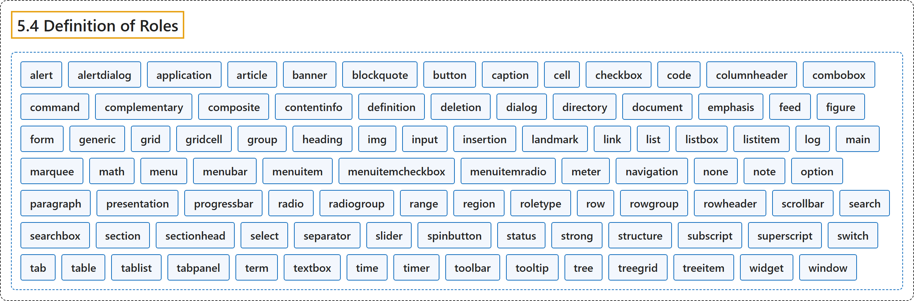

5.4 Definition of Roles
Classification

Glossary
| Term | Definition | 中文翻译 | Source |
|---|---|---|---|
| 5.4 Definition of Roles 角色的定义 |
"Below is an alphabetical list of WAI-ARIA roles to be used by authors." | 下面是供作者使用的 WAI-ARIA 角色的字母顺序列表。 | World Wide Web Consortium, 2023, section 5.4 |
| alert 警报 |
"A type of live region with important, and usually time-sensitive, information." | 一种实时区域，带有重要且通常有时效的信息。 | World Wide Web Consortium, 2023, section 5.4, alert |
| alertdialog 警报对话框 |
"A type of dialog that contains an alert message, where initial focus goes to an element within the dialog." | 一种对话框，它包含警报消息，初始焦点落在对话框内的某个元素上。 | World Wide Web Consortium, 2023, section 5.4, alertdialog |
| application 应用 |
"A structure containing one or more focusable elements requiring user input, such as keyboard or gesture events, that do not follow a standard interaction pattern supported by a widget role." | 一种结构，包含一个或多个需要用户输入的可聚焦元素（如键盘或手势事件），它们不遵循控件角色所支持的标准交互模式。 | World Wide Web Consortium, 2023, section 5.4, application |
| article 文章 |
"A section of a page that consists of a composition that forms an independent part of a document, page, or site." | 页面的一节，由一篇构成文档、页面或站点的独立部分的作品组成。 | World Wide Web Consortium, 2023, section 5.4, article |
| banner 横幅 |
"A landmark that contains mostly site-oriented content, rather than page-specific content." | 一种地标，主要包含面向站点的内容，而非页面特有的内容。 | World Wide Web Consortium, 2023, section 5.4, banner |
| blockquote 块引用 |
"A section of content that is quoted from another source." | 引自其他来源的一段内容。 | World Wide Web Consortium, 2023, section 5.4, blockquote |
| button 按钮 |
"An input that allows for user-triggered actions when clicked or pressed." | 一种输入，在点击或按下时允许用户触发动作。 | World Wide Web Consortium, 2023, section 5.4, button |
| caption 标题说明 |
"Visible content that names, and may also describe, a figure, table, grid, or treegrid." | 可见内容，用来命名并可能描述图、表格、网格或树形网格。 | World Wide Web Consortium, 2023, section 5.4, caption |
| cell 单元格 |
"A cell in a tabular container." | 表格式容器中的单元格。 | World Wide Web Consortium, 2023, section 5.4, cell |
| checkbox 复选框 |
"A checkable input that has three possible values: true, false, or mixed." | 一种可勾选的输入，有三个可能的值：true、false 或 mixed。 | World Wide Web Consortium, 2023, section 5.4, checkbox |
| code 代码 |
"A section whose content represents a fragment of computer code." | 内容为一段计算机代码的节。 | World Wide Web Consortium, 2023, section 5.4, code |
| columnheader 列标题 |
"A cell containing header information for a column." | 包含列的标题信息的单元格。 | World Wide Web Consortium, 2023, section 5.4, columnheader |
| combobox 组合框 |
"An input that controls another element, such as a listbox or grid, that can dynamically pop up to help the user set the value of the input." | 一种输入，它控制另一个元素（如列表框或网格），该元素可以动态弹出以帮助用户设置输入的值。 | World Wide Web Consortium, 2023, section 5.4, combobox |
| command 命令 |
"A form of widget that performs an action but does not receive input data." | 一种控件，它执行动作但不接收输入数据。 | World Wide Web Consortium, 2023, section 5.4, command |
| complementary 补充内容 |
"A landmark that is designed to be complementary to the main content at a similar level in the DOM hierarchy, but remaining meaningful when separated from the main content." | 一种地标，设计为在 DOM 层次中与主内容处于相似层级、对主内容起补充作用，但与主内容分离后仍有意义。 | World Wide Web Consortium, 2023, section 5.4, complementary |
| composite 复合控件 |
"A widget that may contain navigable descendants or owned children." | 可以包含可导航后代或从属子元素的控件。 | World Wide Web Consortium, 2023, section 5.4, composite |
| contentinfo 内容信息 |
"A landmark that contains information about the parent document." | 包含关于父文档的信息的地标。 | World Wide Web Consortium, 2023, section 5.4, contentinfo |
| definition 定义 |
"A definition of a term or concept." | 术语或概念的定义。 | World Wide Web Consortium, 2023, section 5.4, definition |
| deletion 删除 |
"A deletion contains content that is marked as removed or content that is being suggested for removal." | 删除包含标记为已移除的内容，或建议移除的内容。 | World Wide Web Consortium, 2023, section 5.4, deletion |
| dialog 对话框 |
"A dialog is a descendant window of the primary window of a web application." | 对话框是 Web 应用主窗口的后代窗口。 | World Wide Web Consortium, 2023, section 5.4, dialog |
| directory 目录 |
"[Deprecated in ARIA 1.2] A list of references to members of a group, such as a static table of contents." | [在 ARIA 1.2 中已弃用] 指向组成员的引用列表，例如静态目录。 | World Wide Web Consortium, 2023, section 5.4, directory |
| document 文档 |
"An element containing content that assistive technology users may want to browse in a reading mode." | 一种元素，其内容是辅助技术用户可能想要以阅读模式浏览的。 | World Wide Web Consortium, 2023, section 5.4, document |
| emphasis 强调 |
"One or more emphasized characters." | 一个或多个被强调的字符。 | World Wide Web Consortium, 2023, section 5.4, emphasis |
| feed 信息流 |
"A scrollable list of articles where scrolling may cause articles to be added to or removed from either end of the list." | 可滚动的文章列表，滚动可能使文章在列表任一端被添加或移除。 | World Wide Web Consortium, 2023, section 5.4, feed |
| figure 图 |
"A perceivable section of content that typically contains a graphical document, images, code snippets, or example text." | 可感知的一段内容，通常包含图形文档、图像、代码片段或示例文本。 | World Wide Web Consortium, 2023, section 5.4, figure |
| form 表单 |
"A landmark region that contains a collection of items and objects that, as a whole, combine to create a form." | 一种地标区域，包含一组项目和对象，它们作为整体组合成一个表单。 | World Wide Web Consortium, 2023, section 5.4, form |
| generic 通用容器 |
"A nameless container element that has no semantic meaning on its own." | 无名称的容器元素，它本身没有语义。 | World Wide Web Consortium, 2023, section 5.4, generic |
| grid 网格 |
"A composite widget containing a collection of one or more rows with one or more cells where some or all cells in the grid are focusable by using methods of two-dimensional navigation, such as directional arrow keys." | 一种复合控件，包含一行或多行、每行一个或多个单元格的集合，其中部分或全部单元格可以通过二维导航方法聚焦，例如方向键。 | World Wide Web Consortium, 2023, section 5.4, grid |
| gridcell 网格单元格 |
"A cell in a grid or treegrid." | 网格或树形网格中的单元格。 | World Wide Web Consortium, 2023, section 5.4, gridcell |
| group 组 |
"A set of user interface objects that is not intended to be included in a page summary or table of contents by assistive technologies." | 一组用户界面对象，不打算被辅助技术收入页面摘要或目录。 | World Wide Web Consortium, 2023, section 5.4, group |
| heading 标题 |
"A heading for a section of the page." | 页面中某一节的标题。 | World Wide Web Consortium, 2023, section 5.4, heading |
| img 图像 |
"A container for a collection of elements that form an image." | 一个容器，装着构成一幅图像的一组元素。 | World Wide Web Consortium, 2023, section 5.4, img |
| input 输入 |
"A generic type of widget that allows user input." | 一种通用控件类型，允许用户输入。 | World Wide Web Consortium, 2023, section 5.4, input |
| insertion 插入 |
"An insertion contains content that is marked as added or content that is being suggested for addition." | 插入包含标记为已添加的内容，或建议添加的内容。 | World Wide Web Consortium, 2023, section 5.4, insertion |
| landmark 地标 |
"A perceivable section containing content that is relevant to a specific, author-specified purpose and sufficiently important that users will likely want to be able to navigate to the section easily and to have it listed in a summary of the page." | 可感知的一节，其内容与作者指定的特定目的相关且足够重要，用户很可能希望能轻松导航到该节，并让它列在页面摘要中。 | World Wide Web Consortium, 2023, section 5.4, landmark |
| link 链接 |
"An interactive reference to an internal or external resource that, when activated, causes the user agent to navigate to that resource." | 指向内部或外部资源的交互式引用，被激活时使用户代理导航到该资源。 | World Wide Web Consortium, 2023, section 5.4, link |
| list 列表 |
"A section containing listitem elements." | 包含 listitem 元素的节。 | World Wide Web Consortium, 2023, section 5.4, list |
| listbox 列表框 |
"A widget that allows the user to select one or more items from a list of choices." | 一种控件，允许用户从选项列表中选择一项或多项。 | World Wide Web Consortium, 2023, section 5.4, listbox |
| listitem 列表项 |
"A single item in a list or directory." | 列表或目录中的单个项目。 | World Wide Web Consortium, 2023, section 5.4, listitem |
| log 日志 |
"A type of live region where new information is added in meaningful order and old information may disappear." | 一种实时区域，其中新信息按有意义的顺序添加，旧信息可能消失。 | World Wide Web Consortium, 2023, section 5.4, log |
| main 主内容 |
"A landmark containing the main content of a document." | 包含文档主内容的地标。 | World Wide Web Consortium, 2023, section 5.4, main |
| marquee 滚动字幕 |
"A type of live region where non-essential information changes frequently." | 一种实时区域，其中非必要信息频繁变化。 | World Wide Web Consortium, 2023, section 5.4, marquee |
| math 数学 |
"Content that represents a mathematical expression." | 表示数学表达式的内容。 | World Wide Web Consortium, 2023, section 5.4, math |
| menu 菜单 |
"A type of widget that offers a list of choices to the user." | 一种控件，向用户提供选项列表。 | World Wide Web Consortium, 2023, section 5.4, menu |
| menubar 菜单栏 |
"A presentation of menu that usually remains visible and is usually presented horizontally." | 菜单的一种呈现形式，通常保持可见并通常水平呈现。 | World Wide Web Consortium, 2023, section 5.4, menubar |
| menuitem 菜单项 |
"An option in a set of choices contained by a menu or menubar." | 菜单或菜单栏所含一组选项中的一个选项。 | World Wide Web Consortium, 2023, section 5.4, menuitem |
| menuitemcheckbox 复选菜单项 |
"A menuitem with a checkable state whose possible values are true, false, or mixed." | 带有可勾选状态的菜单项，可能的值为 true、false 或 mixed。 | World Wide Web Consortium, 2023, section 5.4, menuitemcheckbox |
| menuitemradio 单选菜单项 |
"A checkable menuitem in a set of elements with the same role, only one of which can be checked at a time." | 同一角色的一组元素中的可勾选菜单项，同一时间只能选中其中一个。 | World Wide Web Consortium, 2023, section 5.4, menuitemradio |
| meter 计量器 |
"An element that represents a scalar measurement within a known range, or a fractional value." | 表示已知范围内的标量测量值或分数值的元素。 | World Wide Web Consortium, 2023, section 5.4, meter |
| navigation 导航 |
"A landmark containing a collection of navigational elements (usually links) for navigating the document or related documents." | 包含一组导航元素（通常是链接）的地标，用于在文档或相关文档间导航。 | World Wide Web Consortium, 2023, section 5.4, navigation |
| none 无 |
"An element whose implicit native role semantics will not be mapped to the accessibility API." | 一种元素，其隐式原生角色语义不会映射到无障碍 API。 | World Wide Web Consortium, 2023, section 5.4, none |
| note 注释 |
"A section whose content is parenthetic or ancillary to the main content of the resource." | 内容对资源主内容起插入或辅助作用的节。 | World Wide Web Consortium, 2023, section 5.4, note |
| option 选项 |
"A selectable item in a listbox." | 列表框中可选择的项目。 | World Wide Web Consortium, 2023, section 5.4, option |
| paragraph 段落 |
"A paragraph of content." | 一段内容。 | World Wide Web Consortium, 2023, section 5.4, paragraph |
| presentation 呈现 |
"An element whose implicit native role semantics will not be mapped to the accessibility API." | 一种元素，其隐式原生角色语义不会映射到无障碍 API。 | World Wide Web Consortium, 2023, section 5.4, presentation |
| progressbar 进度条 |
"An element that displays the progress status for tasks that take a long time." | 为耗时较长的任务显示进度状态的元素。 | World Wide Web Consortium, 2023, section 5.4, progressbar |
| radio 单选按钮 |
"A checkable input in a group of elements with the same role, only one of which can be checked at a time." | 同一角色的一组元素中的可勾选输入，同一时间只能选中其中一个。 | World Wide Web Consortium, 2023, section 5.4, radio |
| radiogroup 单选组 |
"A group of radio buttons." | 一组单选按钮。 | World Wide Web Consortium, 2023, section 5.4, radiogroup |
| range 范围 |
"An element representing a range of values." | 表示值的范围的元素。 | World Wide Web Consortium, 2023, section 5.4, range |
| region 区域 |
"A landmark containing content that is relevant to a specific, author-specified purpose and sufficiently important that users will likely want to be able to navigate to the section easily and to have it listed in a summary of the page." | 一种地标，其内容与作者指定的特定目的相关且足够重要，用户很可能希望能轻松导航到该节，并让它列在页面摘要中。 | World Wide Web Consortium, 2023, section 5.4, region |
| roletype 角色类型 |
"The base role from which all other roles inherit." | 所有其他角色都继承自的基础角色。 | World Wide Web Consortium, 2023, section 5.4, roletype |
| row 行 |
"A row of cells in a tabular container." | 表格式容器中的一行单元格。 | World Wide Web Consortium, 2023, section 5.4, row |
| rowgroup 行组 |
"A structure containing one or more row elements in a tabular container." | 表格式容器中包含一个或多个 row 元素的结构。 | World Wide Web Consortium, 2023, section 5.4, rowgroup |
| rowheader 行标题 |
"A cell containing header information for a row." | 包含行的标题信息的单元格。 | World Wide Web Consortium, 2023, section 5.4, rowheader |
| scrollbar 滚动条 |
"A graphical object that controls the scrolling of content within a viewing area, regardless of whether the content is fully displayed within the viewing area." | 控制内容在可视区域内滚动的图形对象，无论内容是否完整显示在可视区域内。 | World Wide Web Consortium, 2023, section 5.4, scrollbar |
| search 搜索 |
"A landmark region that contains a collection of items and objects that, as a whole, combine to create a search facility." | 一种地标区域，包含一组项目和对象，它们作为整体组合成一个搜索功能。 | World Wide Web Consortium, 2023, section 5.4, search |
| searchbox 搜索框 |
"A type of textbox intended for specifying search criteria." | 一种文本框，用于指定搜索条件。 | World Wide Web Consortium, 2023, section 5.4, searchbox |
| section 节 |
"A renderable structural containment unit in a document or application." | 文档或应用中可呈现的结构性容纳单元。 | World Wide Web Consortium, 2023, section 5.4, section |
| sectionhead 节标题 |
"A structure that labels or summarizes the topic of its related section." | 标注或概括相关节的主题的结构。 | World Wide Web Consortium, 2023, section 5.4, sectionhead |
| select 选择 |
"A form widget that allows the user to make selections from a set of choices." | 一种表单控件，允许用户从一组选项中进行选择。 | World Wide Web Consortium, 2023, section 5.4, select |
| separator 分隔符 |
"A divider that separates and distinguishes sections of content or groups of menuitems." | 一种分隔线，分开并区分内容的各节或菜单项的各组。 | World Wide Web Consortium, 2023, section 5.4, separator |
| slider 滑块 |
"An input where the user selects a value from within a given range." | 一种输入，用户从给定范围内选择一个值。 | World Wide Web Consortium, 2023, section 5.4, slider |
| spinbutton 微调按钮 |
"A form of range that expects the user to select from among discrete choices." | 一种范围形式，期望用户从离散的选项中选择。 | World Wide Web Consortium, 2023, section 5.4, spinbutton |
| status 状态 |
"A type of live region whose content is advisory information for the user but is not important enough to justify an alert, often but not necessarily presented as a status bar." | 一种实时区域，其内容是给用户的提示信息，但不够重要、不足以用警报，常常但不一定以状态栏形式呈现。 | World Wide Web Consortium, 2023, section 5.4, status |
| strong 加强 |
"Content that is important, serious, or urgent." | 重要、严肃或紧急的内容。 | World Wide Web Consortium, 2023, section 5.4, strong |
| structure 结构 |
"A document structural element." | 文档结构元素。 | World Wide Web Consortium, 2023, section 5.4, structure |
| subscript 下标 |
"One or more subscripted characters." | 一个或多个下标字符。 | World Wide Web Consortium, 2023, section 5.4, subscript |
| superscript 上标 |
"One or more superscripted characters." | 一个或多个上标字符。 | World Wide Web Consortium, 2023, section 5.4, superscript |
| switch 开关 |
"A type of checkbox that represents on/off values, as opposed to checked/unchecked values." | 一种复选框，表示开/关值，而不是选中/未选中值。 | World Wide Web Consortium, 2023, section 5.4, switch |
| tab 标签页 |
"A grouping label providing a mechanism for selecting the tab content that is to be rendered to the user." | 一种分组标签，提供选择标签页内容的机制，所选内容将呈现给用户。 | World Wide Web Consortium, 2023, section 5.4, tab |
| table 表格 |
"A section containing data arranged in rows and columns." | 包含按行和列排列的数据的节。 | World Wide Web Consortium, 2023, section 5.4, table |
| tablist 标签页列表 |
"A list of tab elements, which are references to tabpanel elements." | tab 元素的列表，它们是对 tabpanel 元素的引用。 | World Wide Web Consortium, 2023, section 5.4, tablist |
| tabpanel 标签页面板 |
"A container for the resources associated with a tab, where each tab is contained in a tablist." | 装着与某个标签页相关资源的容器，每个标签页都包含在标签页列表中。 | World Wide Web Consortium, 2023, section 5.4, tabpanel |
| term 术语 |
"A word or phrase with a corresponding definition." | 有对应定义的词或短语。 | World Wide Web Consortium, 2023, section 5.4, term |
| textbox 文本框 |
"A type of input that allows free-form text as its value." | 一种输入，允许自由格式的文本作为其值。 | World Wide Web Consortium, 2023, section 5.4, textbox |
| time 时间 |
"An element that represents a specific point in time." | 表示特定时间点的元素。 | World Wide Web Consortium, 2023, section 5.4, time |
| timer 计时器 |
"A type of live region containing a numerical counter which indicates an amount of elapsed time from a start point, or the time remaining until an end point." | 一种实时区域，包含数字计数器，指示从起点起已经过的时间，或到终点为止剩余的时间。 | World Wide Web Consortium, 2023, section 5.4, timer |
| toolbar 工具栏 |
"A collection of commonly used function buttons or controls represented in compact visual form." | 以紧凑视觉形式呈现的一组常用功能按钮或控件。 | World Wide Web Consortium, 2023, section 5.4, toolbar |
| tooltip 工具提示 |
"A contextual popup that displays a description for an element." | 一种上下文弹出框，显示元素的描述。 | World Wide Web Consortium, 2023, section 5.4, tooltip |
| tree 树 |
"A widget that allows the user to select one or more items from a hierarchically organized collection." | 一种控件，允许用户从按层次组织的集合中选择一项或多项。 | World Wide Web Consortium, 2023, section 5.4, tree |
| treegrid 树形网格 |
"A grid whose rows can be expanded and collapsed in the same manner as for a tree." | 一种网格，其行可以像树一样展开和折叠。 | World Wide Web Consortium, 2023, section 5.4, treegrid |
| treeitem 树项 |
"An option item of a tree." | 树的选项项目。 | World Wide Web Consortium, 2023, section 5.4, treeitem |
| widget 控件 |
"An interactive component of a graphical user interface (GUI)." | 图形用户界面（GUI）的交互式组件。 | World Wide Web Consortium, 2023, section 5.4, widget |
| window 窗口 |
"A browser or application window." | 浏览器或应用窗口。 | World Wide Web Consortium, 2023, section 5.4, window |
References
World Wide Web Consortium. (2023, June 6). Accessible Rich Internet Applications (WAI-ARIA) 1.2 (W3C Recommendation). https://www.w3.org/TR/wai-aria-1.2/